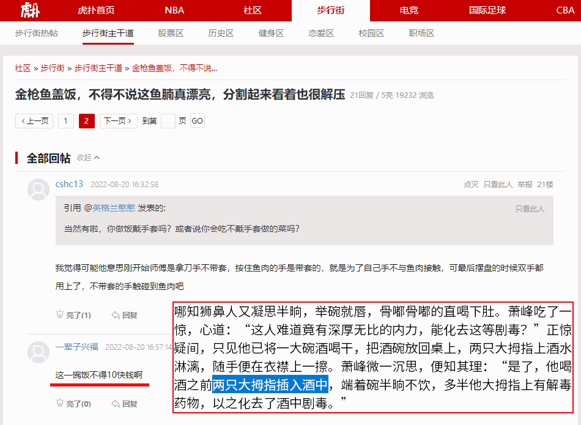
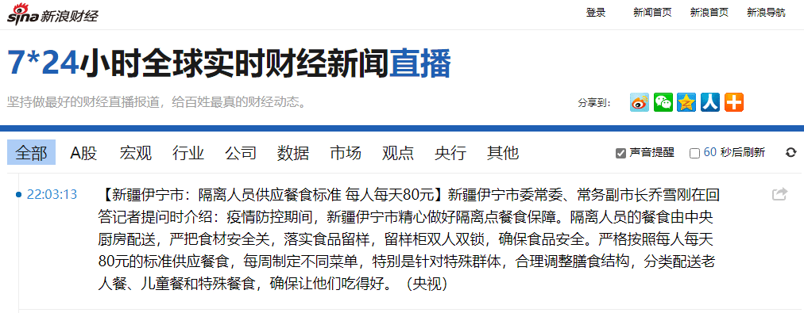
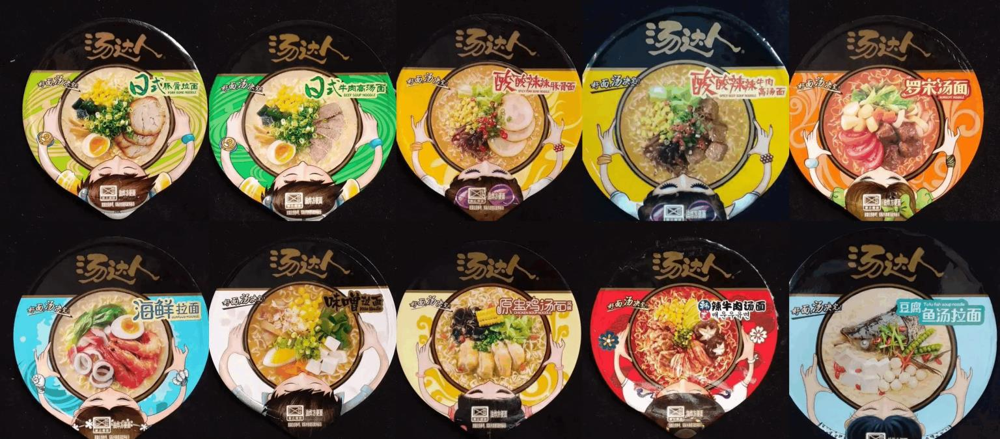
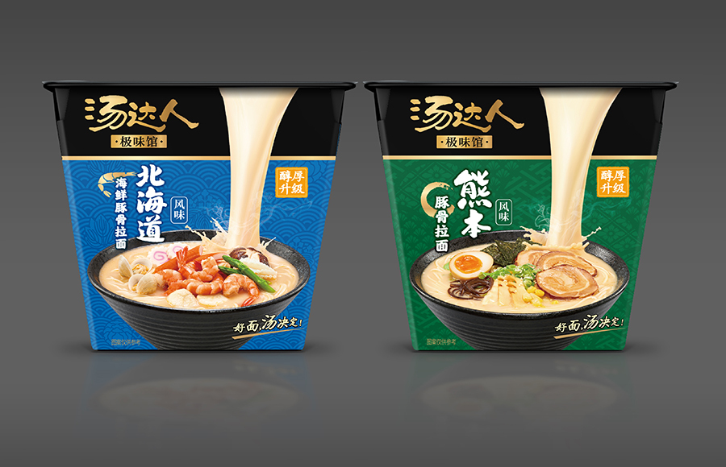
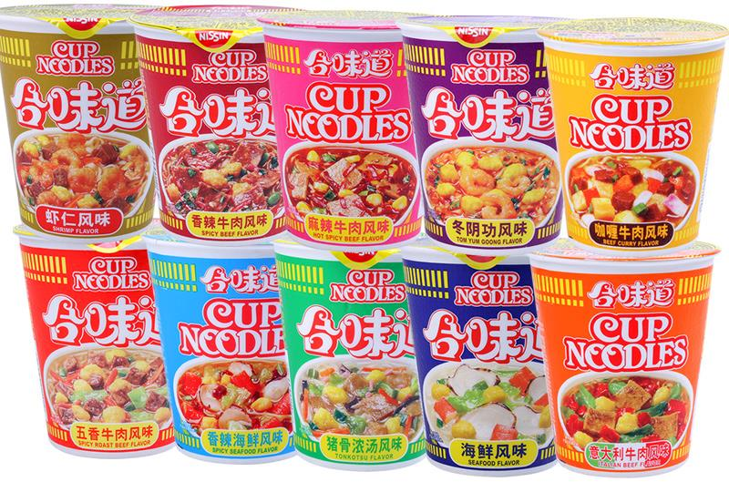
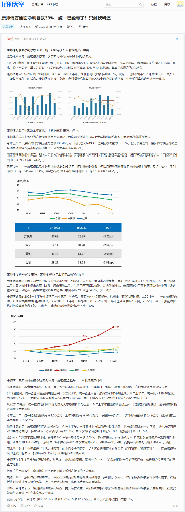

fanhan-inside
前情提要
缘起
就是因为继屎绿配色宣传阵地、屎黄配色宣传阵地之后，今天（其实是昨天）中专混混转战屎红配色宣传阵地继续掀起真理标准大讨论《日本拉面与兰州拉面，哪个更好吃/你怎么选？》
其它网友的真知灼见
理性客观公正中立的评论已经出现过许多次了，每次都淹没在中专混混的胡说八道胡搅蛮缠乃至污言秽语当中：
日本拉面是一个菜系，从北海道直到九州口味各不相同；而兰州拉面全国都那一个味儿，即便是兰州当地的牛肉面也那个味儿，顶多汤头熬得用心点，和面揉得仔细点儿而已。
至于价格，中专混混叫嚣「日本拉面二三十一碗就那么几片叉烧」遭遇中国籍汉族知华人士掴面：「兰州当地十块钱一碗拉面你还想要几片酱牛肉」？
这个我就有发言权了，百闻不如一见，虽然兰州青海宁夏新疆没去过，但是家贼亲口告诉我的，「清真物价」：一万块钱三罐天山雪蜜，四千五百块钱六罐山东下水罐头。
日本我待过，没贵到这么个离谱程度，这种安史之乱时期才会出现的「虽有数斗玉，不如一盘粟」于是饥肠辘辘的党中央国务院全套领导班子直奔四川盆地逃荒将大批贱种屁民扔在原地供少数民族屠杀的情况下，普通人的生存时间以小时计算。
我毫不怀疑，家贼找我要七万块钱交「供暖费」的时候，如果当时我的存款足够，估计家贼会活到今年俄乌开打之后欧洲「断气」，然后给我一张「西部马×连锁店拉面就餐券」就算打发，好比中石油还是中石化与沙特阿美合作推出的「万吨加油卡」那样——反正你丫这辈子也用不完。
就事论事
这么说吧，换个说法：
兰州拉面与台湾牛肉面、广东牛腩面、四川内江牛肉面、湖北襄阳牛肉面、淮南牛肉汤、常德牛肉粉……乃至河南牛/羊肉烩面、山西猪/牛肉卤刀削面、北京炸酱面、四川担担面、镇江锅盖面、武汉热干面……你怎么选？
同样的问题而已，还不掺和国恨家仇乃至「扬我国威振我军威……你有身份证么」相关话题，脑壳只有红白两色液体的中专混混难以撒泼耍赖满地打滚，想必是几乎所有网友一边倒的送分题。
继续换个说法：
从小我听得最多的面条是「抻面」，户口本奶奶是典型的山西家庭妇女，每次做面条的时候，就是市面上称为「手擀面」那种做法，和面之后一团一团拿出来用擀面杖碾为面饼，切成条……然后「抻」，最终结果是拉面的「三细」程度，下锅。再细就费劲了，或者需要专业训练和面与抻面手段，或者不如去胡同口国营副食店买的挂面，乃至「龙须面」……那上架的商品还就是机器做的面条，与「日本拉面」一样。
长大了见到內亚外宾来北京「撒谎偷窃诈骗」了或曰推销一万块钱三罐的天山雪蜜以及四千五百块钱六罐的山东下水罐头了，才知道「拉面」就是同样的东西。
正如前情提要当中评价「肉夹馍」一样，凡是种麦子养猪的地方都有，问题不在于肉夹馍本身，而在于有些地方「只有」肉夹馍，别的什么都拿不出手——所谓「兰州拉面」就是这种东西，以化隆为代表的星宿海，除了偷个隔壁创意跑遍全中国招摇撞骗之外，真的什么都拿不出手。
扩展阅读
中专混混可以继续硬着头皮肿着脸「政治站队」，那是它们的「工作」，按照擅长把酒泼在人脸上的领导讲话，当员工只想要一块面包的时候，HR认为员工不值一块面包——于是中专混混临时工只想要一碗兰州拉面，但是HR认为它们甭说不值一碗兰州拉面，连一口汤头都不值，虽然它们丫的善良恶毒不是一文不值吧，明码标价早就有了：带货（最近任务是兰州拉面）一次，获得零点五元人民币报酬。
既然是「政治站队」，那么当然要看所在广告公司当前项目的屁股。而我没有接受任何组织和个人的工作委托，只从自己的独立的人格和意志出发用自己的脑壳思考：已知傻哔绿人指使家贼推销清真垃圾前后骗我约两万块钱还通过自杀式断后继续消耗我约两万块钱，死到临头还偷走我手机——那么我应该支持哪边暂且不提，不支持哪边已经是常凯申琦玉陈元脑壳上的虱子——明摆着的了。
总之，本篇日志随便写点最近看到的「烹饪」相关内容，既然看见了这些内容，总会有些感想，因为楼上人渣纯傻哔或曰东海台湾岛女特务黄蓉砸凳子跺脚就被干扰于是闭口不谈不可能，我越烦丫越得瑟，那么丫越急着骚扰我的发言措辞应该越损越刻薄对丫攻击性越强才对。
如果说屎黄宣传阵地本来就有「厨艺美食」版块，于是收录到合集大杂烩水区出现并不奇怪，但是屎绿、屎红、屎蓝配色的宣传阵地当中并没有类似讨论区，密集涌现类似话题肯定与政治和意识形态斗争有关。
——昨天C站《新闻联播》生放送晚了三分钟，不是缺了一段而是是从播出到结束整体平移了三分钟，我没看电视而是看其它网友评价这事才知道的，各位读者知道么？
fanhan-inside
补充中专混混最新名言「咱星宿海拉面只要零点五元人民币」：

长话短说，这帮脑壳里只有红白两色液体的肌肉棒子「恨人有笑人无」的丑恶嘴脸已经看腻歪了，最近尤其是明显。这种时候身正道直的应对方式上面提到了，就是团结全国人民一起批斗这帮星宿海邪教徒。偌大一个中国似乎除了「化隆拉面」没有其它牛肉面了，甚至没有其它面条了。谁信啊？只不过近十年牛哔哄哄星宿海邪教徒就是认识傻哔绿人「和硕亲王陈家洛」有党中央、中央军委撑腰罢了……还能开个假警察局当红顶诈骗犯呢。
而邪道做派则后患无穷，对，就是楼上东海台湾岛女特务黄蓉那种从内部攻破堡垒的方式，一边冒充星宿海邪教徒狂喷「广东叉烧面」满口污言秽语每句话都有「日杂胎毒汉奸」字眼，一边自称广东土著狂喷「北佬」满纸火星文，当然还有看热闹不嫌事大唯恐天下不乱的好事者煽风点火挑拨离间，想必多年来繁荣的简体中文互联网上每个MCN办公室里面都有一套三个工位。
那么按照预告展开感想，这条回复就是与鱼肉相关，当然还是「本店绝不清真，傻哔绿人食客请自重」原则。
之前与网友扯淡过，话题因为「鱼头泡饼」引起的，顺便结合另外一条毒鸡汤，就是那个「妈妈从小就说爱吃鱼头让我吃鱼腹（ハラミ），现在身患绝症住院，我带了妈妈最爱吃的“鱼头泡饼”去探望，没想到妈妈放声大哭」什么的。
尖锐的问题并不难回答：单纯的鱼头泡饼和不包括鱼头在内的鱼腹泡饼的味道有啥区别么？
略有烹饪经验的网友都回答：没有区别。
另外还有一条话题：红烧肉里面除了肉之外还能放什么？
顺便插播咬文嚼字：红烧带鱼、红烧鸡翅、红烧鸡腿甚至红烧牛肉都可以这么说，但是「红烧肉」已经是专有名词了。近代「考据」出渊源之后通常以「东坡肉」附庸风雅，现当代则冠之以「毛氏」字头，因为大救星名言「来碗红烧肉，肥一点，补补脑子」。于是不强调「精选五花肉烫掉皮毛小火慢炖几个钟点肥而不腻」的普通人家与带鱼、鸡翅鸡腿等采用同样红烧做法的猪肉料理，只能称为「炖猪肉」。
这时烹饪经验比较充沛的网友的回答虽然有很多，但是主要集中在几个选择之上。
- 鸡蛋或鹌鹑蛋
- 板栗或山药
- 土豆、茄子或白萝卜
- 豆制品
简而言之，还是「家常炖猪肉」的准备晚饭做法，炒完加水熬差不多了就「大火收汁」，不是从中午开始就「小火慢炖」或者上高压锅。
当年我的回答比较另类：火烧切块，烙饼切片，面筋一分为二、冻豆腐随便。然不排斥水煮鸡蛋鹌鹑蛋和其它豆制品。
简单说就是吸油沾汤用的，本来就是熟的（如火烧烙饼面筋）或者下锅就能熟（如冻豆腐），应该是「鱼头泡饼」相关讨论的后续或曰后遗症。
正经饭店炒起来也很头疼，通常都是先蒸熟或煮熟再炒否则太费油的那些——比如茄子之类——也是不该放的，除非真上高压锅连肉一起炖了。
若是问起各种「泡馍」类，只能提醒一句：切记用死面饼，发面的如馒头花卷乃至面包，下锅就烂在里面了，「入汤即化」想必不是读者们期待的效果。
fanhan-inside
补充情报兼素材「齐奥塞斯库版罗马尼亚民族营养指南」：

为啥放在这里，因为昨晚九点一刻出门扔垃圾顺便购物的时候，由于夜间且下雨，外面路上几乎没有行人。我打着伞扔完垃圾走去社区小卖部的时候，还就有一辆汽车停在路边，下来一人打着伞走路去拥军超市，人肉通知俩哥布林出来站岗了。
然后俩哥布林还真就堵住门口盯着我行注目礼。
为啥不是提前站在门口等我过去就举起智能手机「喂，古拉格派出所吗」或者这次由古拉格派出所主动打来呢？是因为「假警察局 」被端了黑窝点么？于是「线人」扔下戏服与一地狼藉都跑路了么？所以只有临时出动人力通知？可以参考前情提要《克拉科夫密码战》。
总之买了一堆食品，上面毫无例外都写着「营养成分表」，也就是能量、蛋白质、脂肪、碳水化合物、钠……各自有多少，可以补充百分之多少「一日必须营养」。
这个标准的「百分之百」，想必是「权威机构」发布的吧？估计是建设百善の新时代中国特色社会主义の健康生活之「下限」吧？
那么顺便扯点「一日三餐」相关话题。
民谣曰「早吃饱，午吃好，晚吃少」，就是与时俱进的版本，本来我中华兲嘲上国尼堪费拉的传统风俗习惯是「日出而作日入而息」一日两餐的，就连「中午带饭」田间地头避暑乘凉顺便充饥也不知道是从什么时候开始的。
先说早餐，在于迷宫地下城恶人谷摸爬滚打四十余年间，体会到一条生活经验：劳动人民的早餐一定有汤汤水水，也就是「稀的」，而「干的」当然也有，各自不会太多，但肯定都有。
至于为啥，体力劳动者吃完了很快就要出汗了，水分肯定要提前补充好嘛。
所以许多体力劳动者看我这「坐办公室的」早餐还吃那么多，或者「坐办公室的」同事看我不咋出汗还吃那么多，都有过诧异。我也没啥好说的，多年来饭量本来就这么大，没办法。
之前在《十二年一轮回》当中备份过2010年7月23日的三餐，这里再备份差不多一年后（2011年6月30日）同样炎热的夏天当中在另外一家公司上班时的一日三餐。
早上时间充裕的时候在公司附近吃的早餐：
- 豆腐脑×1=￥3
- 油条×1=￥2
- 肉包×2=￥3
- 绿豆粥×1=￥2
- 小咸菜×1
- 茶鸡蛋×1=￥1.5
以及公司附近吃的午餐：
- 至珍全虾堡=￥15
- 上校鸡块（5块）=￥6
- 两块香辣鸡翅=￥8
- 新奥尔良烤翅=￥9
回家之后在小区附近吃的晚餐：
- 羊肉串×10=￥10
- 鸡肉串×5=￥10
- 烤肥腰×2=￥28
- 麻酱油麦菜=￥10
- 啤酒×4=￥16
而最近几年的生活记录，已经在7月28日午夜由于自己手欠升级系统而消失了，不过可以凭记忆复述一遍十八个大前后、2020年春节前后的情况。
由于小区外（有铁门相隔）社区内（有马路分割）的几家馆子的早餐外包给不同的商家，多年来更换过多次，因此有三个主要版本。偶尔也会出门先散步，走得略微远点，到其它「社区」的早餐据点吃。只要是特擅长经营早餐那批专业户开办，内容差别不大，居民去过几家之后就能感觉到同质化问题。偶尔还会去各种「土、洋快餐」换换口味。
小区附近早餐版本一：
- 小笼包/蒸饺一屉
- 炒肝一碗
- 馄饨一碗
- 紫米粥一碗
- 茶鸡蛋一个
版本二：
- 油条一根
- 糖油饼一个
- 麻团一个
- 韭菜盒子一个
- 豆腐脑一碗
- 馄饨一碗
- 小米粥/棒渣粥/棒子面粥/绿豆粥一碗
- 茶鸡蛋一个
版本三：
- 手抓饼/长火烧夹鸡蛋（或鸡蛋灌饼），再夹午餐肉/火腿/鸡柳/烤翅
- 豆腐脑一碗
- 馄饨一碗
- 紫米粥/小米粥……一碗
- 茶鸡蛋一个
后来店内多了胡辣汤，门口多了煎饼果子档位，于是通常偶尔换掉上述某个「干的」「稀的」换换口味，若是饿了（比如之前几年半夜码字直到凌晨）也可能不换直接一起买了吃。
而2021年春节开始莫名其妙的头疼乃至一连串反应导致健康每况愈下，日常饮食的规律就算不得数了。
至于午餐，很多「营养学家」到处推销各种概念如「升糖指数」，说吃了啥就犯困。事实确实如此没啥好说的，不过年轻的时候不显。所以一般想吃啥吃啥，吃到饱为止，吃撑的时候也，但不是「大胃王」那种哗众取宠的吃播所体现的模样，就是正经吃饭的时候还差半盒或半碗硬挺着吃下去——逗哔可以按照二次元「肚皮溜圆」形象理解，但没那么夸张——通常过一阵就消食了，到不了下午一点上班已经恢复正常。
比如我经常中午两份盒饭，因为楼下便利店卖的盒饭太小——就说「齐奥塞斯库版民族营养指南」是按照下限制定的嘛——而在日本买便当的时候，餐盒上都显著的印着热量，通常都拣数字最大的拿，一般都是七百五十千卡左右，印象里差一点到八百。
晚餐就不提了，读者看我最近几年码字自述也知道，年轻的时候开心也是抽烟喝酒啥都吃，上了年纪还这做派有啥奇怪的呢——什么「自暴自弃」乃至「抑郁」都是抹黑，自打家贼按照导演指示打哑迷的结果是让我猜出「共产党贩毒」这黑历史，乃至晋绥陕甘宁黑帮驻京办事处山西/陕西……大厦指挥哥布林经营「和硕亲王陈家洛」领导的假中央政法委乃至「妖艳贱货李师师」把持的假中央军委，直到湖南开国元勋黑帮及其新疆恐怖主义打手与全票冻蒜人民领袖之母校马甸小学背后势力血脖子红卫兵哲合忍耶……之后，就被鉴定出「患有“看谁都是毒贩”之受迫害妄想狂综合症」了也——尤其是夏天，啤酒凉菜烧烤是标准配置。
绿馆子吃得多是因为最初附近只有绿馆子，后来多了一堆带海鲜和五花肉之类菜品的卡费勒烧烤，当然就吃更丰富的那家了。其实还有大铁板型，除了烤鱿鱼之类，就是各种蔬菜，卷上豆皮穿起来烤的那种，烤完了装盘，签子拔不拔的都有。
而换口味的时候也是费拉醜食居多，比如麻辣烫，进店也是各种菜品少许凑够一大盆，通常在外面买好一盒炸臭豆腐当下酒菜，用来在等餐时喝几杯垫垫。炸臭豆腐也有两种，在北京吃得较多的是白色的小方块，类似一般豆制品的形状，酱汁不辣更类似芡汁，孜然粉辣椒粉都是单独放的。
还有一种就是市面上知名度更高的「长沙臭豆腐」，是黑的，酱汁是辣的。除了一两寸见方的那种之外，以前社区某馆子门口档位也有能装满一个长方形打包盒的尺寸，体积达到一个巴掌那么大，有五香、香辣两种。通常在社区酗酒的时候，两份臭豆腐就够了，再拌个凉菜炒个小菜或来碗面垫垫就齐活，剩下就是喝～～～了。
fanhan-inside
长话短说，今天又看见不少舆论，包括但不限于「兰州拉面馆子不让喝酒」「××、××、××谁是更好的清真面馆」以及其它一大堆口水。不想扯太多，这里把今天日记当中相关的部分内容摘录如下：
另外，有个工业化制成品拌面的「常识」以及由此导致的事情顺便记载下来。就是现在一般的拌面盒子上都有专门开好的出水口，早期刚推出「方便拌面」产品的时候没有，而还有些「简装版」就是用普通的塑料透明打包盒包装本来就没有——比如某款简装配送「热干面」。所以有些用户不知道，有些用户认为就不会有。有的产品在封面上「泡面操作流程」当中印出来出水口的位置——包括一些「掀开至此」之类提示语，都是「商业」常识，以前买了不少这种运营相关的书呢，最近整理的时候都看见了——有些就没有。
今天这个方盒乍一看没有，一开始扣着盖子倒水，看见漏出一根面条之后，忽然想起来某几款拌面的情况。那几款也是方盒，只不过盒盖角落有能按下（还有一边与盒盖相连）或抠掉的部位，就是口子开大了照样能流出面条去，如果泡散了的话。今天这款看着挺像，于是仔细观察，发现盒盖对角都各自有两个小孔可以打开，一边进气一边出水的设计，但是包装上那张封面上面没有提及这事。
商标「汤达人」是「统一」旗下牌子，除了这一款绿色包装「日式豚骨拉面」之外，还有一款黄色包装的「酸辣豚骨面」，这几年无论在超市还是小卖部，看见的就是这两种。
这个系列的汤头都是「豚骨」尝起来味道相同，上网一搜简介说已经推出七种口味，但其它很少在现实中见到。仔细找找，发现《统一汤达人共发行有10种口味》：
统一汤达人是统一集团旗下一种高品质的方便面，一直是统一的主打产品。
经过收集整理，现已收集到10种口味（小杯装），分别是：
- 日式豚骨拉面
- 日式牛肉高汤面
- 酸酸辣辣豚骨拉面
- 酸酸辣辣牛肉高汤面
- 海鲜口味拉面
- 罗宋汤面
- 味噌拉面
- 辣牛肉汤面
- 原盅鸡汤面
- 豆腐鱼汤面
十种口味里只有7种口味是有大碗装的，只有少部分是袋装的。
以上口味其中日式牛肉高汤面和酸酸辣辣牛肉高汤面是清真版的，只在西北地区尤其是新疆有卖。另外豆腐鱼汤拉面目前只有湖北江西部分地区有卖。

官网的情报稍微不同，还有「极味馆」系列，已经推出两种：

而商标「合味道」是「日清」的，以前也吃过，有几款好吃，有些就是典型的「味精料包」特色。上网搜了一下，也有十种口味：

其中是不是出现「仅限清真地区销售 」相关在商言商的操作了？可以对照由于特色食材或其它缘故仅限当地销售的产品，自行判断理由。
不用看具体的个别「店面」，就看着这些方便面品种，已经形成标准化流程的口味及其配料，可以合理的推测一下这种「供应链」能支撑多少「化隆拉面」那种声势的「连锁店」。至于面条则都是「拉面」，不是削的不是碾的不是揪的，把经过或不经过油炸的干燥面条换成或手工或机械制成的「鲜面」，就是市面上零售的「ラーメン」。
——若是还能碰上觉得中专混混叫嚣「我星宿海化隆拉面一种口味单挑全国乃至全球面点被麦加中央钦定了兲下第一」似乎有那么一些道理的逗哔，读者们就都当它们是傻哔好了。
fanhan-inside
补充情报兼素材：

这两天没看见啥（关于拉面话题的）新鲜舆论，中专混混还是按照既定的方针政策路线计划有气无力的将谎言重复1001～2000遍的第二次「真理标准大讨论」，这就是说「第一次」已经胜利完成的意思吗？
那么简单写几句收尾。
首先是方便面历史，既不是国家机密也不是宇宙奥秘，一个由于「历史原因」而成为「日本企业家」的日籍台湾人在破产之后发明了「（袋装）鸡汤拉面」（チキンラーメン），随后推出了「杯面」（カップヌードル），是「日清集团」创始人。
能被称呼为「拉面」的食品在公众认知当中的基本特征「汤与细长面条」都保留下来了，从那时候开始到现在都只有口味改良，相关的发明创造都是包装之上的。
其次是「预制菜」「料理包」，这时当代所有一定规模以上的连锁店的共识，一定有「中央厨房」保证供应链与品质稳定，不会把希望寄托在具体某个或某批烹饪从业人员之上。谁敢说「化隆拉面」不是？化隆之外的其它清真拉面馆子照样有每天往锅里倒袋装汤料烧开水的。
除此之外各种汤头都有，不光羊杂汤、各肉泡啥、卡舒吉夹啥之类「清真美食」，更多的是「卡费勒醜食」，包括但不限于「豚骨汤头」「海鲜汤头」乃至「味噌」「罗宋」「冬阴」之类汤头。
再次就是「机制」「手打」面条了，这个吵过了。除了增加就业之外，对于店家和食客双方来说都是亏本买卖，增加的成本和售价与提升的品质不成比例，特别的缺点是品质不稳定，换家馆子换个厨子吃起来感觉就「流水落花春去也，换了人间」谁受得了？
最后就用上面的例子再次举例。我说囧斋周边零售常见的「汤达人」就开头那两种，「日式豚骨拉面」「酸辣豚骨拉面」。而网友补充还有对应的两种主要在新疆销售，「日式牛肉高汤面」「酸辣牛肉高汤面」。
虽然后者没吃过，但是不惮以最大的恶意揣测，只要把前者的汤头换成西北流行的「兰州牛肉面」的汤头，就是「化隆拉面」那种味道还有所胜出，使用西北当地现成的供货商使得供应链毫无压力，并且其它配菜完全与豚骨面相同，可以使用统一自家供应链配送——各位读者兼食客们信不信？
至于为什么这么想，可以参考这两天耍钱的新浪或曰后浪奔走相告的若干条情报，没有截图备份因为不重要，我这么一说，读者这么一听，可以自行确认。就是「中国银行上调康师傅评级」，原话如此，具体后面是「证券」「集团」还是什么分支下属机构名称，业内都能猜到，我看不懂但大概能想通。
因为北京就有「康师傅私房牛肉面」实体店，还不止一家，网上能搜到一堆。
方便面出现几十年了，供应链出现几十年了，能配送制造业中间品的物流，就能配送餐饮业料理包的物流。把食品生产企业转换为餐饮经营企业，并不是个新鲜点子。
正如本篇主题所提到的让绿皮中专混混恼羞成怒气急败坏连续发表歪理邪说吹捧「化隆拉面」的导火索，开办实体餐饮连锁店哪怕至少是拉面馆子甚至仅限「日本拉面专营」这招……统一想不到？日清想不到？康师傅人在境内这种串联地头蛇打通人脉搞定公检法税务工商城管消防之类的基层生意干着更方便点而已。
这种时候，由于「商场如战场」，于是乎北京特产血脖子红卫兵哲合忍耶之类「清真餐饮业」背后赞助商「一颗红心两手准备」当中红的发黑的那只手，就会邀请「化隆拉面」有关人士出面作为「商业纠纷」当中的一方了——各位读者兼食客信不信？